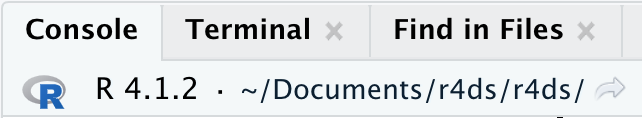

6 Flujo de trabajo: scripts y proyectos
Este capítulo le presentará dos herramientas esenciales para organizar su código: scripts y proyectos.
6.1 Scripts
Hasta ahora, ha utilizado la consola para ejecutar código. Ese es un excelente lugar para comenzar, pero encontrará que se atasca bastante rápido a medida que crea gráficos ggplot2 más complejos y canalizaciones dplyr más largas. Para disponer de más espacio para trabajar, utilice el editor de secuencias de comandos. Ábralo haciendo clic en el menú Archivo, seleccionando Nuevo archivo, luego R script, o usando el atajo de teclado Cmd/Ctrl + Shift + N. Ahora verá cuatro paneles, como en Figura 6.1. El editor de secuencias de comandos es un gran lugar para experimentar con su código. Cuando desee cambiar algo, no tiene que volver a escribirlo todo, simplemente puede editar el script y volver a ejecutarlo. Y una vez que haya escrito el código que funciona y hace lo que desea, puede guardarlo como un archivo de secuencia de comandos para volver fácilmente a él más tarde.
6.1.1 Código en ejecución
El editor de secuencias de comandos es un lugar excelente para crear gráficas de ggplot2 complejas o largas secuencias de manipulaciones de dplyr. La clave para usar el editor de secuencias de comandos de manera efectiva es memorizar uno de los atajos de teclado más importantes: Cmd/Ctrl + Enter. Esto ejecuta la expresión de R actual en la consola. Por ejemplo, tome el siguiente código.
library(dplyr)
library(nycflights13)
not_cancelled <- flights |>
filter(!is.na(dep_delay)█, !is.na(arr_delay))
not_cancelled |>
group_by(year, month, day) |>
summarize(mean = mean(dep_delay))Si su cursor está en █, al presionar Cmd/Ctrl + Enter se ejecutará el comando completo que genera not_cancelled. También moverá el cursor a la siguiente declaración (comenzando con not_cancelled |>). Eso hace que sea más fácil recorrer el script completo presionando repetidamente Cmd/Ctrl + Enter.
En lugar de ejecutar su código expresión por expresión, también puede ejecutar el script completo en un solo paso con Cmd/Ctrl + Shift + S. Hacer esto regularmente es una excelente manera de asegurarse de haber capturado todas las partes importantes de su código en el script.
Le recomendamos que siempre comience su script con los paquetes que necesita. De esa forma, si comparte su código con otras personas, pueden ver fácilmente qué paquetes necesitan instalar. Tenga en cuenta, sin embargo, que nunca debe incluir install.packages() en un script que comparta. ¡Es desconsiderado entregar un script que cambiará algo en su computadora si no tienen cuidado!
Cuando trabaje en capítulos futuros, le recomendamos que comience con el editor de scripts y practique los atajos de teclado. Con el tiempo, enviar código a la consola de esta manera se volverá tan natural que ni siquiera pensará en ello.
6.1.2 Diagnósticos de RStudio
En el editor de secuencias de comandos, RStudio resaltará los errores de sintaxis con una línea ondulada roja y una cruz en la barra lateral:

Pase el cursor sobre la cruz para ver cuál es el problema:

RStudio también le informará sobre posibles problemas:

6.1.3 Guardar y nombrar
RStudio guarda automáticamente el contenido del editor de secuencias de comandos cuando sale y lo vuelve a cargar automáticamente cuando lo vuelve a abrir. Sin embargo, es una buena idea evitar Untitled1, Untitled2, Untitled3, etc. y, en su lugar, guardar sus scripts y darles nombres informativos.
Puede ser tentador nombrar sus archivos code.R o miscript.R, pero debe pensar un poco más antes de elegir un nombre para su archivo. Tres principios importantes para la denominación de archivos son los siguientes:
- Los nombres de los archivos deben ser legibles por máquina: evite espacios, símbolos y caracteres especiales. No confíe en la distinción entre mayúsculas y minúsculas para distinguir archivos.
- Los nombres de los archivos deben ser legibles por personas: use nombres de archivos para describir lo que hay en el archivo.
- Los nombres de archivo deberían funcionar bien con el orden predeterminado: comience los nombres de archivo con números para que la ordenación alfabética los coloque en el orden en que se usan.
Por ejemplo, suponga que tiene los siguientes archivos en una carpeta de proyecto.
alternative model.R
code for exploratory analysis.r
finalreport.qmd
FinalReport.qmd
fig 1.png
Figure_02.png
model_first_try.R
run-first.r
temp.txtHay una variedad de problemas aquí: es difícil encontrar qué archivo ejecutar primero, los nombres de los archivos contienen espacios, hay dos archivos con el mismo nombre pero con mayúsculas diferentes (finalreport vs. FinalReport[^workflow-scripts-1 ]), y algunos nombres no describen su contenido (run-first y temp).
Aquí hay una mejor manera de nombrar y organizar el mismo conjunto de archivos:
01-load-data.R
02-exploratory-analysis.R
03-model-approach-1.R
04-model-approach-2.R
fig-01.png
fig-02.png
report-2022-03-20.qmd
report-2022-04-02.qmd
report-draft-notes.txtLa numeración de los scripts clave hace que sea obvio en qué orden ejecutarlos y un esquema de nombres consistente hace que sea más fácil ver qué varía. Además, las cifras se etiquetan de manera similar, los informes se distinguen por las fechas incluidas en los nombres de los archivos y se cambia el nombre de temp a report-draft-notes para describir mejor su contenido. Si tiene muchos archivos en un directorio, se recomienda llevar la organización un paso más allá y colocar diferentes tipos de archivos (guiones, figuras, etc.) en diferentes directorios.
6.2 Proyectos
Un día, deberá salir de R, hacer otra cosa y volver a su análisis más tarde. Un día, estará trabajando en múltiples análisis simultáneamente y querrá mantenerlos separados. Un día, deberá traer datos del mundo exterior a R y enviar resultados numéricos y cifras de R al mundo.
Para manejar estas situaciones de la vida real, debe tomar dos decisiones:
¿Cuál es la fuente de la verdad? ¿Qué guardará como registro duradero de lo que sucedió?
¿Dónde vive su análisis?
6.2.1 ¿Cuál es la fuente de la verdad?
Como principiante, está bien confiar en su entorno actual para contener todos los objetos que ha creado a lo largo de su análisis. Sin embargo, para que sea más fácil trabajar en proyectos más grandes o colaborar con otros, su fuente de verdad deben ser los scripts R. Con sus scripts de R (y sus archivos de datos), puede recrear el entorno. Solo con su entorno, es mucho más difícil recrear sus scripts de R: tendrá que volver a escribir una gran cantidad de código de la memoria (inevitablemente cometiendo errores en el camino) o tendrá que extraer cuidadosamente su historial de R.
Para ayudar a mantener sus scripts de R como la fuente de la verdad para su análisis, le recomendamos que indique a RStudio que no conserve su espacio de trabajo entre sesiones. Puede hacer esto ejecutando usethis::use_blank_slate()1 o imitando las opciones que se muestran en Figura 6.2. Esto le causará un poco de dolor a corto plazo, porque ahora, cuando reinicie RStudio, ya no recordará el código que ejecutó la última vez ni los objetos que creó o los conjuntos de datos que leyó estarán disponibles para su uso. Pero este dolor a corto plazo le ahorra una agonía a largo plazo porque lo obliga a capturar todas los procedimientos importantes en su código. No hay nada peor que descubrir tres meses después del hecho de que solo almacenó los resultados de un cálculo importante en su entorno, no el cálculo en sí mismo en su código.

Hay un gran par de atajos de teclado que funcionarán juntos para asegurarse de que ha capturado las partes importantes de su código en el editor:
- Presione Cmd/Ctrl + Shift + 0/F10 para reiniciar R.
- Presione Cmd/Ctrl + Shift + S para volver a ejecutar el script actual.
Usamos colectivamente este patrón cientos de veces a la semana.
Alternativamente, si no usa atajos de teclado, puede ir a Sesión > Reiniciar R y luego resaltar y volver a ejecutar su secuencia de comandos actual.
Servidor RStudio
Si está utilizando el servidor RStudio, su sesión R nunca se reinicia de manera predeterminada. Cuando cierra la pestaña del servidor RStudio, puede parecer que está cerrando R, pero el servidor en realidad lo mantiene funcionando en segundo plano. La próxima vez que regrese, estará exactamente en el mismo lugar donde se fue. Esto hace que sea aún más importante reiniciar R regularmente para que comience con una lista de actualización.
6.2.2 ¿Dónde vive su análisis?
R tiene una poderosa noción del directorio de trabajo. Aquí es donde R busca los archivos que le pides que cargue, y donde colocará los archivos que le pides que guarde. RStudio muestra su directorio de trabajo actual en la parte superior de la consola:

Y puede imprimir esto en código de R ejecutando getwd():
getwd()
#> [1] "/Users/hadley/Documents/r4ds"En esta sesión de R, el directorio de trabajo actual (piense en él como “inicio”) está en la carpeta Documentos de hadley, en una subcarpeta llamada r4ds. Este código devolverá un resultado diferente cuando lo ejecute, porque su computadora tiene una estructura de directorio diferente a la de Hadley.
Como usuario principiante de R, está bien dejar que su directorio de trabajo sea su directorio de inicio, directorio de documentos o cualquier otro directorio extraño en su computadora. Pero llevas varios capítulos en este libro y ya no eres un principiante. Muy pronto debería evolucionar para organizar sus proyectos en directorios y, cuando trabaje en un proyecto, establecer el directorio de trabajo de R en el directorio asociado.
Puede configurar el directorio de trabajo desde R pero nosotros no lo recomendamos:
setwd("/path/to/my/CoolProject")Hay una mejor manera; una manera que también lo coloca en el camino para administrar su trabajo de R como un experto. Así es el proyecto de RStudio.
6.2.3 Proyectos de RStudio
Mantener todos los archivos asociados con un proyecto determinado (datos de entrada, scripts R, resultados analíticos y figuras) juntos en un directorio es una práctica tan sabia y común que RStudio tiene soporte incorporado para esto a través de proyectos. Hagamos un proyecto para que lo use mientras trabaja en el resto de este libro. Haga clic en Archivo > Nuevo proyecto, luego siga los pasos que se muestran en Figura 6.3.

Llame a su proyecto r4ds y piense detenidamente en qué subdirectorio coloca el proyecto. Si no lo guarda en un lugar sensato, ¡será difícil encontrarlo en el futuro!
Una vez que se complete este proceso, obtendrá un nuevo proyecto de RStudio solo para este libro. Verifique que el “hogar” de su proyecto sea el directorio de trabajo actual:
getwd()
#> [1] /Users/hadley/Documents/r4dsAhora ingrese los siguientes comandos en el editor de secuencias de comandos y guarde el archivo, llamándolo “diamantes.R”. Luego, cree una nueva carpeta llamada “datos”. Puede hacerlo haciendo clic en el botón “Nueva carpeta” en el panel Archivos en RStudio. Finalmente, ejecute el script completo que guardará un archivo PNG y CSV en el directorio de su proyecto. No se preocupe por los detalles, los aprenderá más adelante en el libro.
Salga de RStudio. Inspeccione la carpeta asociada con su proyecto — observe el archivo .Rproj. Haga doble clic en ese archivo para volver a abrir el proyecto. Observe que vuelve a donde lo dejó: es el mismo directorio de trabajo e historial de comandos, y todos los archivos en los que estaba trabajando todavía están abiertos. Sin embargo, debido a que siguió nuestras instrucciones anteriores, tendrá un entorno completamente nuevo, lo que garantiza que está comenzando desde cero.
De la forma específica de su sistema operativo favorito, busque diamonds.png en su computadora y encontrará el PNG (no es de extrañar), pero también el script que lo creó (diamonds.R). ¡Esta es una gran victoria! Un día querrás rehacer una figura o simplemente entender de dónde vino. Si guarda rigurosamente las figuras en archivos con código de R y nunca con el mouse o el portapapeles, ¡podrá reproducir trabajos antiguos con facilidad!
6.2.4 Rutas relativas y absolutas
Una vez que esté dentro de un proyecto, solo debe usar rutas relativas, no rutas absolutas. ¿Cual es la diferencia? Una ruta relativa es relativa al directorio de trabajo, es decir, el hogar del proyecto. Cuando Hadley escribió data/diamonds.csv arriba, era un atajo para /Users/hadley/Documents/r4ds/data/diamonds.csv. Pero lo que es más importante, si Mine ejecutara este código en su computadora, apuntaría a /Users/Mine/Documents/r4ds/data/diamonds.csv. Esta es la razón por la que las rutas relativas son importantes: funcionarán independientemente de dónde termine la carpeta del proyecto R.
Las rutas absolutas apuntan al mismo lugar independientemente de su directorio de trabajo. Se ven un poco diferentes dependiendo de su sistema operativo. En Windows, comienzan con una letra de unidad (por ejemplo, C:) o dos barras invertidas (por ejemplo, \\servername) y en Mac/Linux comienzan con una barra inclinada “/” (por ejemplo, /users/hadley). Nunca debe usar rutas absolutas en sus scripts, porque dificultan el uso compartido: nadie más tendrá exactamente la misma configuración de directorio que usted.
Hay otra diferencia importante entre los sistemas operativos: cómo se separan los componentes de la ruta. Mac y Linux usan barras inclinadas (por ejemplo, data/diamonds.csv) y Windows usa barras invertidas (por ejemplo, data\diamonds.csv). R puede funcionar con cualquier tipo (sin importar qué plataforma esté usando actualmente), pero desafortunadamente, las barras invertidas significan algo especial para R, y para obtener una sola barra invertida en la ruta, ¡debe escribir dos barras invertidas! Eso hace que la vida sea frustrante, por lo que recomendamos usar siempre el estilo Linux/Mac con barras diagonales.
6.3 Ejercicios
Vaya a la cuenta de Twitter RStudio Tips, https://twitter.com/rstudiotips y encuentre un consejo que parezca interesante. ¡Practica usarlo!
¿Qué otros errores comunes informará el diagnóstico de RStudio? Lea https://support.posit.co/hc/en-us/articles/205753617-Code-Diagnostics para averiguarlo.
6.4 Resumen
En este capítulo, ha aprendido a organizar su código R en scripts (archivos) y proyectos (directorios). Al igual que el estilo de código, esto puede parecer un trabajo pesado al principio. Pero a medida que acumule más código en múltiples proyectos, aprenderá a apreciar cómo un poco de organización inicial puede ahorrarle mucho tiempo en el futuro.
En resumen, los guiones y los proyectos le brindan un flujo de trabajo sólido que le será útil en el futuro:
- Cree un proyecto de RStudio para cada proyecto de análisis de datos.
- Guarde sus scripts (con nombres informativos) en el proyecto, edítelos, ejecútelos en bits o como un todo. Reinicie R con frecuencia para asegurarse de haber capturado todo en sus scripts.
- Solo use rutas relativas, no rutas absolutas.
Entonces todo lo que necesita está en un solo lugar y claramente separado de todos los demás proyectos en los que está trabajando.
Hasta ahora, hemos trabajado con conjuntos de datos incluidos en paquetes de R. Esto hace que sea más fácil obtener algo de práctica con datos preparados previamente, pero obviamente sus datos no estarán disponibles de esta manera. Entonces, en el próximo capítulo, aprenderá cómo cargar datos desde el disco en su sesión R usando el paquete readr.
Si no tiene instalado usethis, puede instalarlo con
install.packages("usethis").↩︎